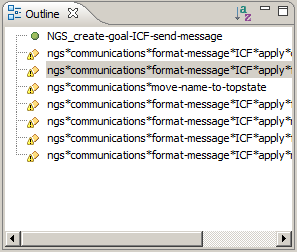

The Soar Outline displays the Soar productions and Tcl procedures defined in the file open in the currently active editor (more than one editor can be opened at once).
You can navigate the editor to the definition of a given production or procedure by selecting it in the outline.
Toolbar Features
- Sort outline elements alphabetically.
Other Features
- Error and warning markers decorate displayed elements according to the status of the model.
- Select a production or procedure to display it in the Soar Source Viewer and navigate to its definition within the file.